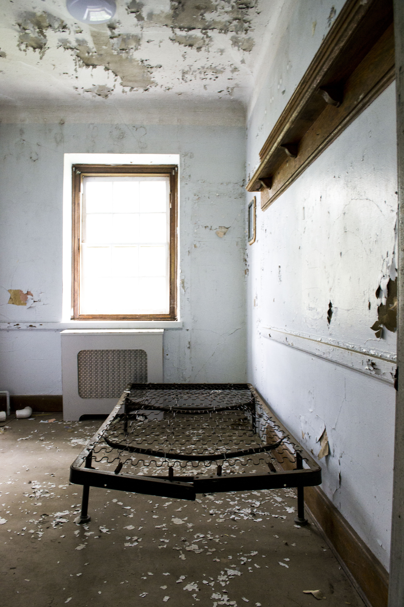
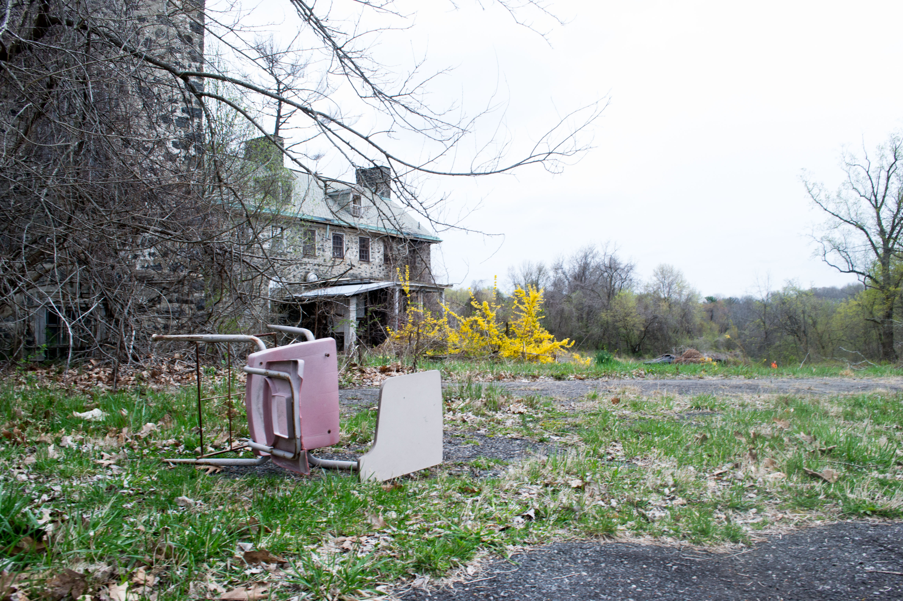
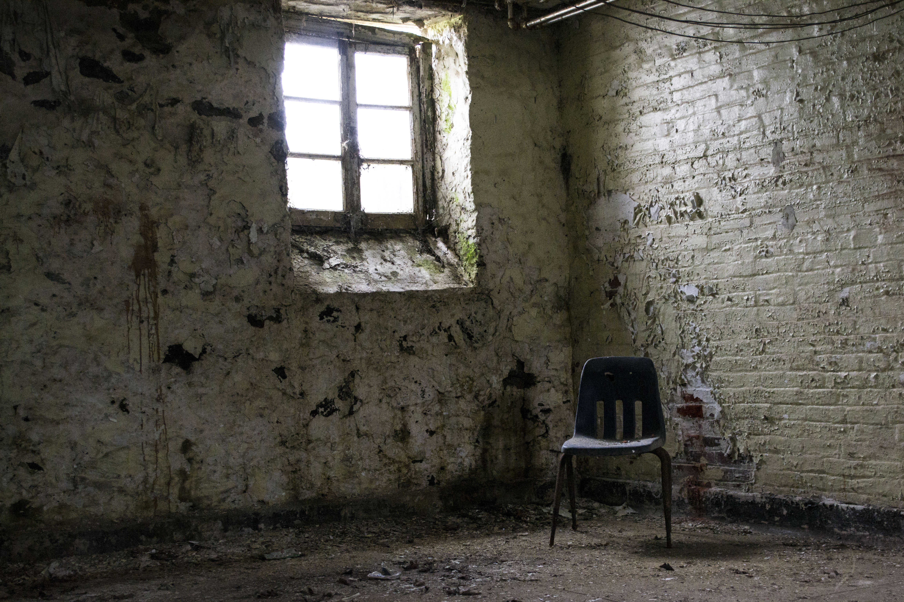
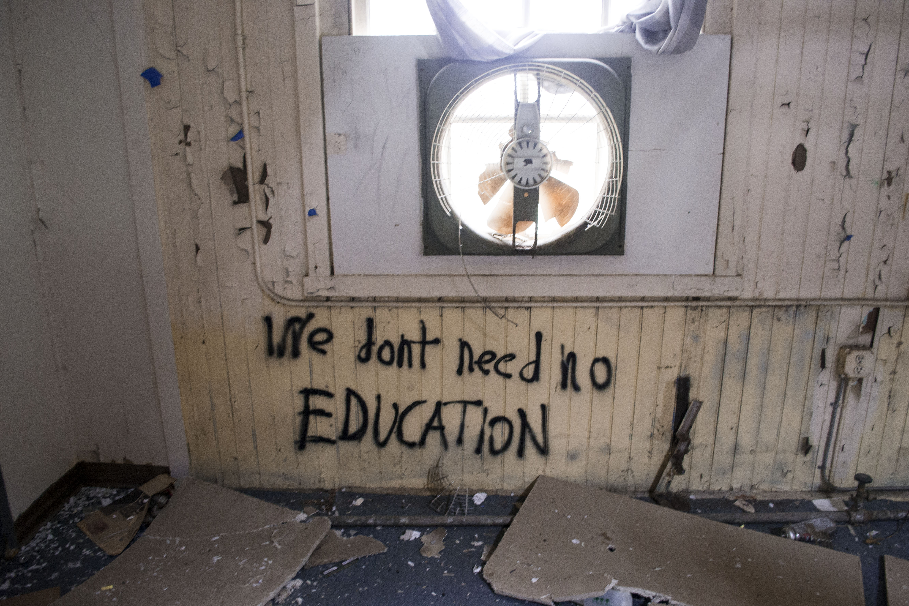
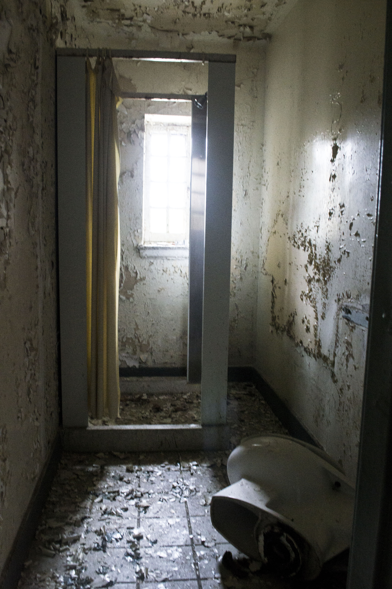

Page 1 - Photography









Overall, I'm interested in many different hobbies and activities, and digital photography happens to be a very big one for me. These images represent one subject of photography that I've focused on over the past year, which is abandoned places. Photography has always been a deep interest of mine, and I've developed several portfoliols since the start of my college career. A goal of mine would be to eventually create my own online portfolio/website for my photographs using html and css.